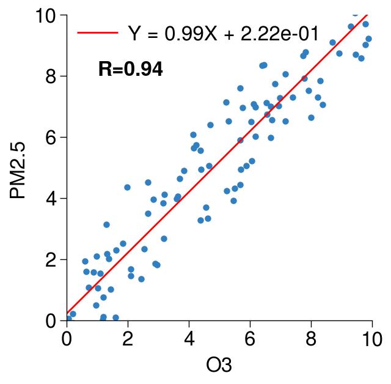

import pandas as pd
import matplotlib.pyplot as plt
import numpy as np
import proplot as plot
plot.rc['figure.facecolor'] = 'w'
import copy
import warnings
warnings.filterwarnings("ignore")import numpy as np
import matplotlib.pyplot as plt
from matplotlib import cm
from matplotlib.colors import Normalize
from scipy.interpolate import interpn
from scipy.stats import pearsonr
from sklearn.metrics import mean_absolute_percentage_error
# 使用sklearn调用衡量线性回归的MSE 、 RMSE、 MAE、r2
from math import sqrt
from sklearn.metrics import mean_absolute_error
from sklearn.metrics import mean_squared_error
from sklearn.metrics import r2_score
def density_scatter( x , y, ax = None, sort = True, bins = 20,percent=80,metawidth=0.4, **kwargs ) :
"""
Scatter plot colored by 2d histogram
"""
if ax is None :
fig , ax = plt.subplots()
data , x_e, y_e = np.histogram2d( x, y, bins = bins, density = True )
z = interpn( ( 0.5*(x_e[1:] + x_e[:-1]) , 0.5*(y_e[1:]+y_e[:-1]) ) , data , np.vstack([x,y]).T , method = "splinef2d", bounds_error = False)
#To be sure to plot all data
z[np.where(np.isnan(z))] = 0.0
# Sort the points by density, so that the densest points are plotted last
if sort :
idx = z.argsort()
x, y, z = x[idx], y[idx], z[idx]
m=ax.scatter( x, y#c=z
, vmax=np.percentile(z, percent),vmin=0,**kwargs )#vmax=80%
if 'cmap' in kwargs:
# 包含cmap参数
cmap = kwargs['cmap']
vmin = np.min(z)
vmax = np.max(z)
if 'vmin' in kwargs:
# 包含cmap参数
vmin = kwargs['vmin']
if 'vmax' in kwargs:
# 包含cmap参数
vmax = kwargs['vmax']
norm = Normalize(vmin = vmin, vmax = vmax)
#cbar = ax.colorbar(cm.ScalarMappable(norm = norm,cmap=cmap))
# cbar=ax.colorbar(m,loc='r',lw=metawidth)
# cbar.ax.set_ylabel('Density')
return ax,m
#dsout.interp_like(dsy),dsy)
#x,y=dsout.interp_like(dsy).values.flatten(),dsy.values.flatten()
dx=5
dx2=1
# 生成随机数据
np.random.seed(0)
n_samples = 100
x = np.random.rand(n_samples)*10
y = 1 * x + np.random.randn(n_samples)*1 # y = 2x + 噪声
nan_union = np.isnan(x) + np.isnan(y)
y=y[~nan_union]
x=x[~nan_union]
print('a')
R=pearsonr(x,y)[0]
print(R)
print("mean_absolute_error:", mean_absolute_error(x,y))
print("mean_squared_error:", mean_squared_error(x,y))
print("rmse:", sqrt(mean_squared_error(x,y)))
print("r2 score:", r2_score(x,y))
mape=mean_absolute_percentage_error(x,y)
print("mape:",mape)a
0.944522569256287
mean_absolute_error: 0.8623845994287559
mean_squared_error: 1.0297617241074744
rmse: 1.0147717596127093
r2 score: 0.8761081822858403
mape: 0.37054958340747335yarray([ 4.32298520e+00, 8.05272015e+00, 6.49329620e+00, 3.91258814e+00,
5.72480019e+00, 8.35483031e+00, 5.55465168e+00, 8.73780517e+00,
8.56587498e+00, 4.88886692e+00, 7.51407343e+00, 6.51139427e+00,
5.88872059e+00, 1.02326054e+01, 1.06672698e+00, 1.57786617e+00,
2.12683995e-01, 1.01120689e+01, 7.90847960e+00, 9.10211085e+00,
1.16693341e+01, 6.64382658e+00, 3.34430862e+00, 8.77468847e+00,
9.62085358e-03, 8.34283140e+00, 1.01991389e+00, 8.69923436e+00,
7.14142524e+00, 5.62713419e+00, 4.51311508e+00, 8.64838155e+00,
3.70027764e+00, 7.59440444e+00, -8.01053666e-02, 6.97881137e+00,
7.06820919e+00, 6.01432988e+00, 1.00515602e+01, 7.74040966e+00,
3.97150454e+00, 3.27091875e+00, 7.27455013e+00, 1.92864061e+00,
5.97309929e+00, 6.55674416e+00, 1.66867206e+00, 3.13852671e+00,
3.82657827e+00, 4.04456955e+00, 4.93205163e+00, 4.92526433e+00,
9.20940572e+00, 1.05227867e+00, 1.45292148e+00, 2.28952847e+00,
7.10767407e+00, 2.32461727e+00, 5.05911444e+00, 1.35119441e+00,
9.84382437e-02, 1.54314311e+00, 6.72996939e+00, 2.01686095e+00,
4.34896839e+00, 4.63173119e+00, 7.29711007e+00, 2.08802905e+00,
7.06354166e+00, 4.99399474e-01, 9.69635304e+00, 6.39985474e+00,
9.02285606e+00, 5.22201666e+00, 7.29418327e+00, -2.71600364e-01,
3.95470555e+00, 1.22034104e-01, 1.81393332e+00, 7.49457145e-01,
2.68179934e+00, 6.07216200e+00, 1.59089577e+00, 7.01227244e+00,
4.44057902e+00, 3.49825789e+00, 4.23226519e+00, -6.05365989e-01,
6.94749475e+00, 9.60990459e+00, 4.10654835e+00, 6.99283145e+00,
2.17480924e+00, 6.51224645e+00, 1.85981809e+00, 2.51350814e+00,
5.06171968e+00, -4.88474316e-01, 7.83386779e+00, 6.44339210e-02])
fontsize=12
metawidth=0.5
xlabel='O3'
ylabel='PM2.5'
fig,axs=plot.subplots(refwidth=2.5,refheight=2.5)
fig.format(abc=False,suptitlesize=20,xlim=(0,10),ylim=(0,10),xlabel=xlabel
,ylabel=ylabel
,grid=False,xtickminor=False,ytickminor=False,metawidth=metawidth,labelsize=fontsize#,xlabelpad=10
,xlocator=2,ylocator=2)
ax=axs[0]
ax,m=density_scatter(x[::1],y[::1] ,ax=ax, s=10,bins=(500, 500),color='#2f7fc1',alpha=1#'rainbow'
,percent=80 )
# 拟合线性回归线
slope, intercept = np.polyfit(x,y, 1)
x0=np.arange(0,10e16,1e16)
regression_line = slope * x0 + intercept
# 在图表中标注线性拟合的公式
equation = f'Y = {slope:.2f}X + {intercept:.2e}'
#ax.annotate(equation, xy=(x.mean(), y[::10].mean()), fontsize=10, color='r'
# ,bbox=dict(boxstyle="round,pad=0.3", edgecolor="none", facecolor="white"))
l2=ax.plot(x0, regression_line, color='red',label=equation,lw=1)
#ax.plot(x0, x0, color='grey',lw=1,linestyle='--')
ax.legend([l2],loc='ul',frameon=False,prop=dict(size=fontsize))
ax.text(0.1,0.8,f'R={R:.2f}'
,fontweight='bold'
,fontsize=fontsize, transform=ax.transAxes)
# ax.text(0.1,0.7,f'MAPE={mape:.2%}'
# ,fontweight='bold'
# ,fontsize=fontsize, transform=ax.transAxes)
# ax.text(0.9,0.2,f'Daily'
# ,fontweight='bold',color='grey',horizontalalignment='right', # 水平居中
# verticalalignment='center' # 垂直居中
# ,fontsize=fontsize, transform=ax.transAxes)
ax.yaxis.offsetText.set_fontsize(fontsize)
ax.xaxis.offsetText.set_fontsize(fontsize)
ax.spines['top'].set_visible(False)
ax.spines['right'].set_visible(False)
fig.format(labelsize=fontsize,ticklabelsize=fontsize,title='',titlesize=fontsize)
